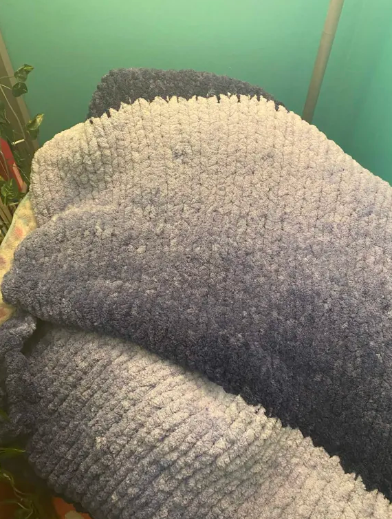

hand-woven blankets are an amazing craft to do, especially in the winter months. they are so warm and nice to snuggle with when you finish making them!
make a slip knot with one end of the yarn and then pull the tail attached to the skein through the loop about 2 inches wide to make another loop. keep pulling through until you have a chain as wide as you want the blanket. to start the next row, pull through the loop you just made and then pull through the one next to that on the bottom chain. continue working backwards on the chain until you reach the end. then continuing making rows until the blanket is as long as you want it. it goes by fairly quickly once you get the hang of it but make sure you are keeping all your loops about the same size or you will have random holes in your blanket.